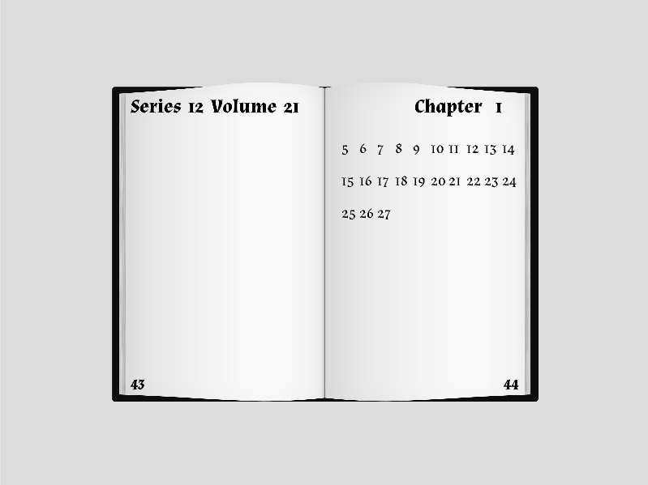

Section 2 Final Project
This assignment involved creating a browser-based design using p5.js, leveraging the system clock’s three core events: seconds, minutes, and hours. It was my first experience programming with JavaScript.

I designed a "Book of Time," where the series and volume represent the date, the chapter number represents the hour, and the page number represents the minute. The passing seconds appear as the content of the book, one by one.